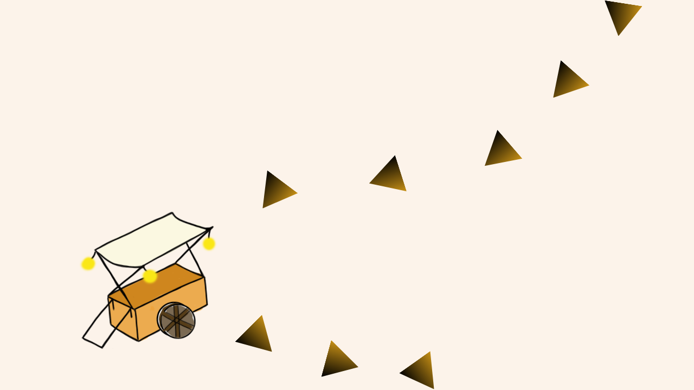
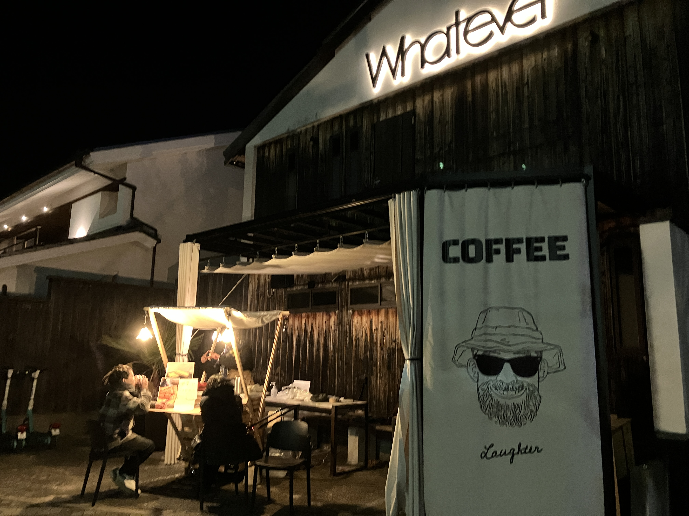
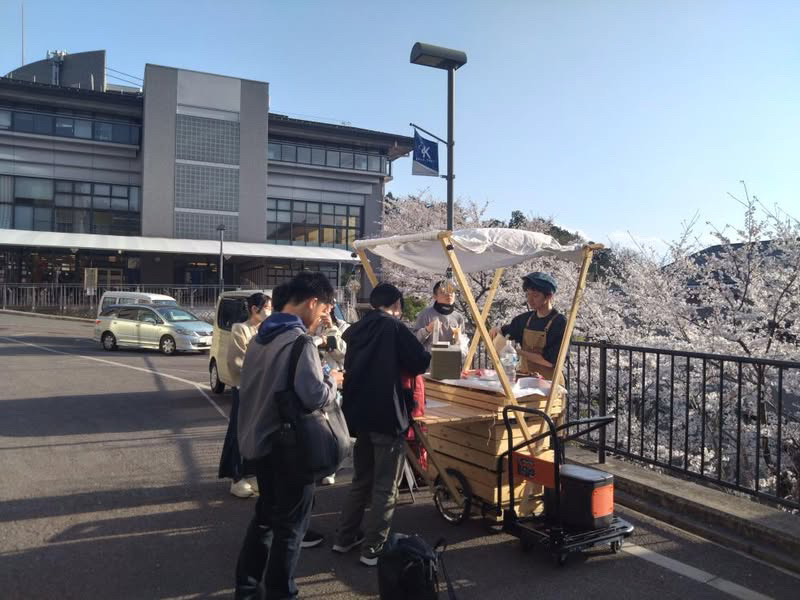
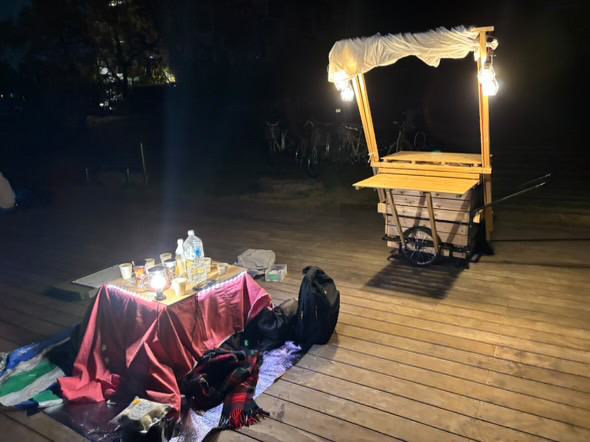
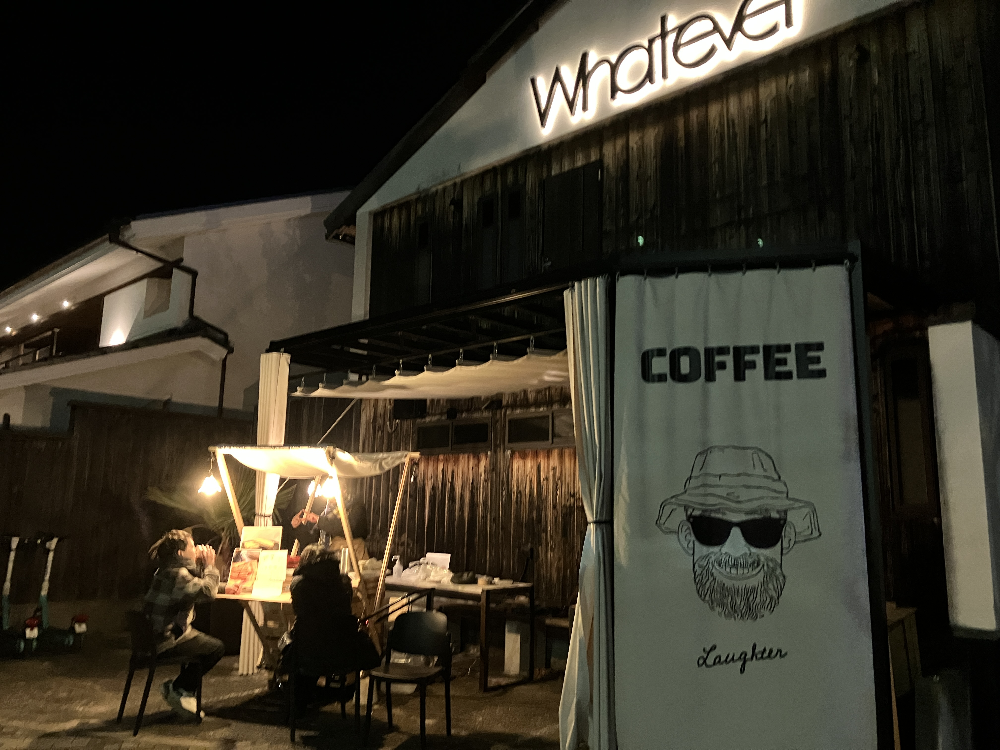
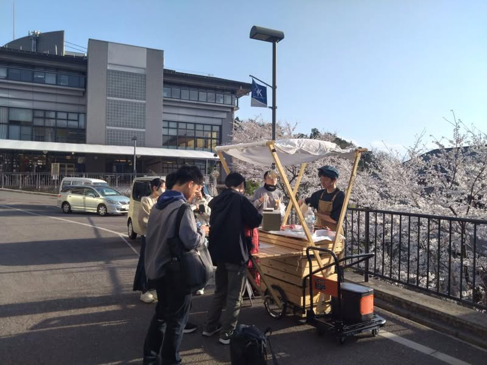
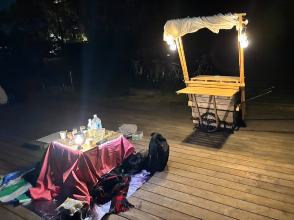

事業内容
「微小夜行電灯」は〈鴨川屋台特区〉と〈京産屋台化計画〉の二つのプロジェクトを軸に、“動くまちづくり”と“学生起業の民主化”を進めています。
鴨川屋台特区
鴨川周辺の空き地や営業時間外の店舗前を組織的に確保し、日替わりで多彩な屋台が並ぶ常設型の屋台村を運営します。参加者は定額費用で出店場所をシェアでき、学生や主婦など小資本でも挑戦しやすい仕組みを用意。私たちは土地斡旋手数料と自社出店で収益を上げながら、京都の象徴的景観に新たな価値と賑わいを創出します。

京産屋台化計画
コンセプトは「1万円であなたを社長に」。京都産業大学と連携し、屋台貸し出し・仕込み場所・資材保管・営業許可申請サポートまでをワンパッケージで提供します。場所・ノウハウ・コストという起業の三大ハードルを取り除き、アイデアさえあれば“今日から店主”になれる環境を整備。学生の柔軟な発想と大学の施設・ネットワークを結び付け、前例のない起業支援エコシステムを構築します。
△△△型屋台
私たちは最終的に△△と併設した屋台を目指します。日中は△△の営業を行い、閉店後は暗い△△の中でひっそりと屋内屋台を展開します。(予定)
日中に△△を置いていたコーナーを夜間は屋台のカウンターにし、余った△△を利用したメニューによって安価なメニューの提供と、廃棄されてしまう食品を減らし、既存の△△をディープな環境にします。
活動実績ギャラリー


 




